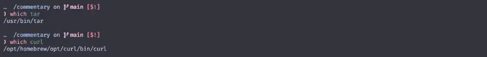
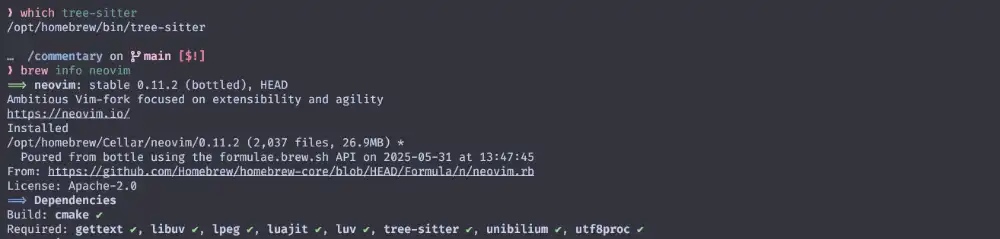

nvim-treesitter
今回は nvim-treesitterを使ってみましょう😆
これさえ使いこなせれば、様々な言語のプログラムコードだったり、
時にはmarkdownの編集など、様々な場面で役立ってくれるはずです❗
The nvim-treesitter plugin provides
nvim-treesitterプラグインは以下を提供します。
- functions for installing, updating, and removing tree-sitter parsers;
- a collection of queries for enabling tree-sitter features built into Neovim for these languages;
- a staging ground for treesitter-based features considered for upstreaming to Neovim.
For details on these and how to help improving them, see CONTRIBUTING.md.
- tree-sitter parsers のインストール、更新、削除機能;
- Neovim に組み込まれた tree-sitter 機能をこれらの言語で有効にするための クエリ 集。
- Neovim へのアップストリームが検討されている treesitter-based featuresのステージング・グラウンド。
これらの詳細と改良の支援方法については、CONTRIBUTING.mdを参照してください。
This is a full, incompatible, rewrite.
If you can't or don't want to update, check out the
master branch
(which is locked but will remain available for backward compatibility).
これは互換性のない完全な書き換えです。 アップデートができない、またはしたくない場合は、masterブランチをチェックしてください (ロックされていますが、後方互換性のために引き続き利用可能です)。
このページの初掲は Dec 4, 2022 ですが、 巡り巡って Jun 5, 2025 時点の状況に合わせて内容を書き換えています。
ところどころ、スクリーンショットが古いままになってたりはしますが、気にしないでください❗
Requirements
一個ずつ確認していきましょう。
- Neovim 0.11.0 or later (nightly)
tarandcurlin your pathtree-sitterCLI (0.25.0 or later)- a C compiler in your path (see https://docs.rs/cc/latest/cc/#compile-time-requirements)
Node(23.0.0 or later) for some parsers (see the list of supported languages)
The support policy for Neovim is
- the latest stable release;
- the latest nightly prerelease.
Other versions may work but are neither tested nor considered for fixes. In general, compatibility with Nvim 0.X is removed after the release of Nvim 0.(X+1).1.
他のバージョンでも動作する可能性はありますが、テストも修正も考慮されていません。 一般的に、Nvim 0.X との互換性は Nvim 0.(X+1).1 のリリース後に削除されます。
Neovim 0.11.0 or later (nightly)
まずはNeovim 0.11.0 以降が必須とされていることに注意が必要です。
tar,curl
自分の環境でtar,curlを使用できるかを確認するにはwhichコマンドを使ってみると良いです 😉
which tar
which curl
なんかそれっぽいパスが表示されていれば、きっと OK でしょう😆
私の環境で言えば、tar は最初から入っていたし、
curl は brew install で簡単にインストールできました。

tree-sitter CLI (0.25.0 or later)
これもwhichコマンドで確認できます。
which tree-sitter
Homebrewでインストールしている場合は Requiredとして、一緒にインストールされているはずです。

C compiler
わたしの経験で言えばmacOSでは問題になったことがありません。最低限Command Line Toolsが入っていれば大丈夫なはずです。
(例えばHomebrewのインストール時に自動で導入されます。)
Windowsの場合はやっぱり別途案内
がされているので、そちらを参照頂ければ...。
Linuxの場合、もしかしたら別途インストールが必要かもしれないので手っ取り早く解決方法だけ載っけちゃうんですが、
gcc-c++、もしくはclangをインストールするのが良さそうです。
| gcc-c++ |  |
| clang |  |
Node (23.0.0 or later) for some parsers
書いてあることそのままですが、"一部の" パーサーでは Node v23 以降を必要とします。
2025/06/05 時点では LTSバージョンが v22.16.0 らしいので、
場合に依っては なんか妙にハードルが高く感じられるかもしれません。
例えばNode.js®をダウンロードする に最初に示されている通りに進んでしまうとうまく行かない (かもしれない) ...😰
currentバージョンは v24 まで進んでいるので、単純に「brewやapt を使った方が簡単だぞ❗」というのは簡単なんだけど...、
はっきり言って、私はここで責任を負わされたくありません 😤
「もし必要になったら 乗り越えて❗」ぐらいで見逃してください...🥹
Install
前項の確認さえ済めば、あとはpackerにお願いするだけで「あっ❗」と言う間に終わります😆
extensions/init.luaに以下を追記しましょう。
require('packer').startup { function()
use 'wbthomason/packer.nvim'
-- 前節で入れたpackerと同列に並べる
use {
'nvim-treesitter/nvim-treesitter',
branch = 'main',
run = ':TSUpdate',
}
end,
-- (以下略)
もし Neovim 0.11.0 より古いバージョンで使用するのであれば、branch を'master' に変えておいてね❗
- branch = 'main',
+ branch = 'master',
そしたら :PackerSync を実行しましょう❗

簡単ですね😉 すっごい古いスクリーンショットだから 見にくいけど❗
Config
Neovimプラグインの場合、Readmeである程度デフォルト設定が示されていて、
それを基に「変える？変えない？」を決めるみたいな、
割とアバウトな方法にどうしてもなってくる...んじゃないかなぁと思ってるんですがどうでしょう❓
今回はもうデフォルト設定のままでいくので、何もする必要がありません❗
setup({opts}) *nvim-treesitter.setup()*
Configure installation options. Needs to be specified before any
installation operation.
インストールオプションの設定。
インストール操作の前に指定する必要があります。
Note: You only need to call `setup` if you want to set non-default
options!
注意: `setup` を呼び出す必要があるのは、デフォルト以外のオプションを設定する場合だけです！
Parameters: ~
• {opts} `(table?)` Optional parameters:
• {install_dir} (`string?`, default `stdpath('data')/site/`)
directory to install parsers and queries to. Note: will be
prepended to |runtimepath|.
再起動もしくは:soでこの状態を反映させてからPackerSyncもしくはPackerCompileを実行しましょう。
すると、nvim-treesitterが動いて、最終的にこんなのが出てきました。

これで、luaファイルが今までよりも賢く色付けされてるはずです。どうでしょう❓
| default |  |
| nvim-treesitter |  |
これだと例が すっごい古い し面白くないんですが、オフィシャルイメージを見るとこんなに変わってます❗
...あっちでもluaは変化がわかりにいんですけどね😅
Commands
まず前提として、以下があります。
PARSER FILES *treesitter-parsers*
Parsers are the heart of treesitter. They are libraries that treesitter will
search for in the `parser` runtime directory.
Nvim includes these parsers:
パーサはtreesitterの心臓部です。これらは treesitter が `parser` ランタイムディレクトリで検索するライブラリです。
Nvimはこれらのパーサーを含んでいます：
- C
- Lua
- Markdown
- Vimscript
- Vimdoc
- Treesitter query files |ft-query-plugin|
You can install more parsers manually, or with a plugin like
https://github.com/nvim-treesitter/nvim-treesitter .
手動でさらにパーサーをインストールすることもでき、
https://github.com/nvim-treesitter/nvim-treesitter のようなプラグインを使うこともできます。
で、手動でパーサーをインストールするために使うコマンドが以下に示されています。
これらのコマンドを使って好きなパーサーを管理できるわけですね 😉
次項から、さらっとした使い方だけ示します。
TSInstall
:TSInstall {language} *:TSInstall*
Install one or more treesitter parsers. {language} can be one or multiple
parsers or tiers (`stable`, `unstable`, or `all` (not recommended)). This is a
no-op of the parser(s) are already installed. Installation is performed
asynchronously. Use *:TSInstall!* to force installation even if a parser is
already installed.
1つ以上の treeitter パーサーをインストールします。
{language} には1つまたは複数のパーサーまたは階層 (`stable`、`unstable`、`all`(推奨しない)) を指定できます。
パーサがすでにインストールされている場合は、このオプションは無効です。
インストールは非同期に実行されます。
パーサーが既にインストールされている場合でも、強制的にインストールするには *:TSInstall!* を使用します。
language の部分は
SUPPORTED_LANGUAGES.md
に示されているものから選んで指定します。
例えば rustパーサーをインストールしたいなー😆 ってなったら以下のコマンドを使用します。
:TSInstall rust
TSInstallFromGrammar
:TSInstallFromGrammar {language} *:TSInstallFromGrammar*
Like |:TSInstall| but also regenerates the `parser.c` from the original
grammar. Useful for languages where the provided `parser.c` is outdated (e.g.,
uses a no longer supported ABI).
|:TSInstall| と似ているが、`parser.c` を元の文法から再生成する。
提供された `parser.c` が古くなっている言語 (例えば、サポートされなくなった ABI を使用している場合など) に便利です。
あまり使う機会はないと思いますが、使い方は同じですね。
:TSInstallFromGrammar rust
TSUpdate
:TSUpdate [{language}] *:TSUpdate*
Update parsers to the `revision` specified in the manifest if this is newer
than the installed version. If {language} is specified, update the
corresponding parser or tier; otherwise update all installed parsers. This is
a no-op if all (specified) parsers are up to date.
Note: It is recommended to add this command as a build step in your plugin
manager.
マニフェストで指定された `revision` がインストールされているバージョンより新しい場合、パーサを更新します。
{language} が指定されている場合は、対応するパーサまたは階層を更新します。
そうでない場合は、インストールされているすべてのパーサを更新します。
指定された全てのパーサが最新である場合、これは省略されます。
Note: このコマンドをプラグインマネージャのビルドステップとして追加することを推奨します。
インストールされているパーサをアップデートしたいならこれ❗
:TSUpdate
TSUninstall
:TSUninstall {language} *:TSUninstall*
Deletes the parser for one or more {language}, or all parsers with `all`.
1つ以上の {language} のパーサを削除するか、`all` で全てのパーサを削除します。
インストールされているパーサを削除したいならこれ❗
:TSUninstall rust
TSLog
:TSLog *:TSLog*
Shows all messages from previous install, update, or uninstall operations.
以前のインストール、アップデート、アンインストール操作のすべてのメッセージを表示します。
nvim-treesitterで行った操作のログを確認したいならこれ❗
:TSLog
CheckHealth
これはnvim-treesitterに限らないNeovimの機能になりますが、healthチェックというものがあります😉
health.vim is a minimal framework to help users troubleshoot configuration and
any other environment conditions that a plugin might care about.
health.vim は、プラグイン設定やその他の環境条件の
トラブルシューティングを支援するための最小限のフレームワークである。
Plugin authors are encouraged to write new healthchecks. |health-dev|
プラグインの作者は新しいヘルスチェックを書くことが推奨されている。
コマンドは:h health-commandsにある通りです。試しに動かしてみましょう。
:che
または
:checkhealth

結果が表示されましたね☺️
これは すっごい古いスクリーンショット だけど❗
診断内容はプラグインに依りますが、
nvim-treesitterの場合は、依存ソフトウェアの確認と、OS情報・インストールされたパーサの表示を行ってくれます。
これもヘルプそのままですが、指定したプラグインだけを診断することも可能です。
:che nvim-treesitter
とすると、nvim-treesitterのヘルスチェックのみを行えます。
冒頭の説明では環境条件と表されていますが、packerの節で少し触れた依存関係と (大体は) 同じ意味でしょう。
プラグインによっては、今回のようにヘルスチェックを提供してくれているので、困った時はこれも参考にすると良いです😉
Wrap Up
というわけで nvim-treesitter でした。
さて、ここまで来たら次にやることはもう決まってますね😉 カラーテーマです❗